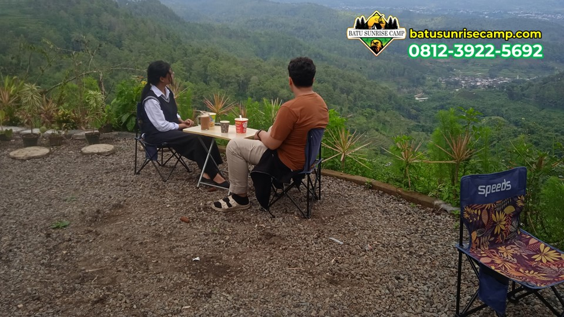

1. Pendahuluan
Kota Batu, Jawa Timur, dikenal sebagai salah satu destinasi wisata alam terbaik di Indonesia. Dengan udara pegunungan yang sejuk dan pemandangan yang memukau, Batu menjadi surga bagi para pecinta camping. Namun, dengan banyaknya pilihan lokasi, bagaimana memilih yang tepat?
Artikel ini akan membantu Anda menemukan lokasi camping terbaik di Batu yang tidak hanya seru tapi juga menghasilkan foto-foto yang instagramable.
📸 "Lokasi camping terbaik bukan hanya tentang kenyamanan, tapi juga tentang keindahan yang bisa Anda abadikan."
Kriteria Lokasi Camping Ideal
Sebelum memilih lokasi, perhatikan beberapa kriteria berikut:
1. Aksesibilitas
Pastikan lokasi camping mudah dijangkau dengan kendaraan. Jalan menuju camping ground sebaiknya sudah beraspal atau setidaknya layak dilalui. Camping Ground Goa Pinus misalnya, memiliki akses jalan yang baik dan mudah ditemukan.
2. Keamanan
Pilih lokasi yang memiliki penerangan memadai, petugas keamanan, dan area parkir yang aman. Ini penting terutama jika Anda camping bersama keluarga.
3. Fasilitas Dasar
Ketersediaan listrik, air bersih, dan toilet adalah hal utama yang harus diperhatikan. Lokasi seperti Batu Sunrise Camp menyediakan semua fasilitas ini.
4. Pemandangan
Untuk foto instagramable, pilih lokasi dengan view yang menakjubkan. Camping ground di dataran tinggi dengan pemandangan sunrise adalah pilihan terbaik.

Rekomendasi Lokasi Camping di Batu
1. Camping Ground Goa Pinus ⭐ (Favorit)
Lokasi camping paling populer di Batu. Dikelilingi pohon pinus yang rindang, area camping ini menawarkan suasana yang sangat alami. Batu Sunrise Camp beroperasi di lokasi ini dengan paket camping mulai dari Rp 50.000.
- Pemandangan sunrise yang spektakuler
- Area yang luas dan terorganisir
- Fasilitas lengkap (listrik, penerangan, dll)
- Mudah diakses dari pusat Kota Batu
2. Area Camping Coban Rondo
Berlokasi dekat air terjun Coban Rondo, area camping ini menawarkan suasana hutan yang asri. Cocok untuk pecinta alam yang ingin suasana lebih natural.
3. Camping Ground Songgoriti
Terkenal dengan sumber air panasnya, area ini cocok bagi Anda yang ingin camping dengan nuansa berbeda.
Tips Foto Camping yang Instagramable
- Golden Hour — Ambil foto saat sunrise atau sunset untuk cahaya terbaik
- Setup Tenda yang Rapi — Tata tenda dan peralatan dengan estetik
- Manfaatkan Api Unggun — Foto dengan latar api unggun selalu menarik
- Silhouette — Coba teknik foto silhouette saat sunrise
- Wide Angle — Gunakan wide angle untuk menangkap keindahan alam sekitar
FAQ
Kapan waktu terbaik untuk camping di Batu?
Musim kemarau (April-Oktober) adalah waktu terbaik. Namun camping saat musim hujan juga punya daya tarik tersendiri.
Apakah camping di Goa Pinus aman?
Ya, area camping di Goa Pinus dilengkapi penerangan dan akses keamanan. Batu Sunrise Camp juga menyediakan layanan 24 jam.
Kesimpulan
Kota Batu menawarkan berbagai pilihan lokasi camping yang indah dan instagramable. Camping Ground Goa Pinus dengan layanan Batu Sunrise Camp menjadi pilihan favorit karena kombinasi pemandangan menakjubkan, fasilitas lengkap, dan harga terjangkau.
Hubungi Batu Sunrise Camp di WhatsApp 081239225692 untuk booking sekarang!

Muhammad Affizar Ibrahim Alkautsar
Pengelola Batu Sunrise Camp yang berdedikasi menghadirkan pengalaman camping terbaik di Kota Batu, Jawa Timur.